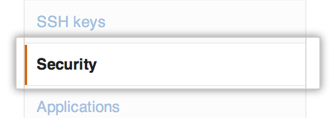
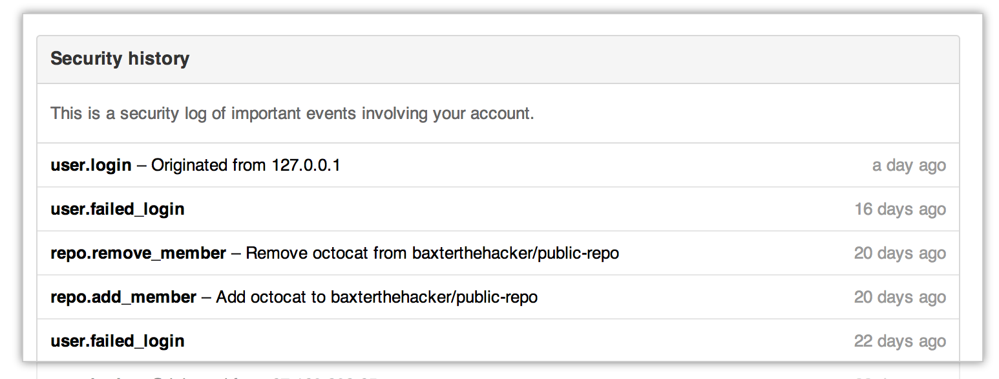
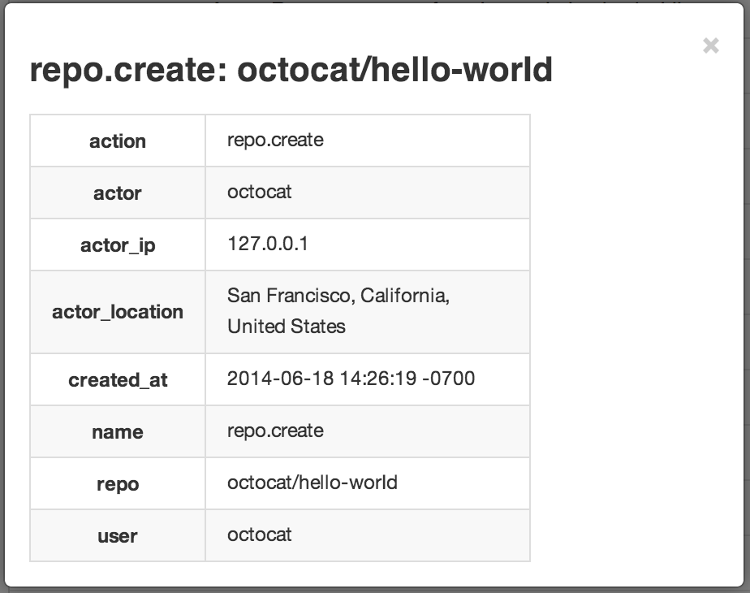

Use the security log to review actions your account has performed on GitHub.
Accessing your security log
The security log lists the last 50 actions or those performed within the last 90 days.
In the user settings sidebar, click Security. 
Under "Security history," your log is displayed. 
- Click on an entry to see more information about the event. 
Understanding events in the security log
Actions listed in the audit log are grouped within the following categories:
| Category Name | Description |
|---|---|
billing | Contains all activities related to your billing information. |
oauth_access | Contains all activities related to OAuth applications you've connected with. |
payment_method | Contains all activities related to paying for your GitHub plan. |
public_key | Contains all activities related to your public SSH keys. |
repo | Contains all activities related to the repositories you own. |
team | Contains all activities related to teams you are a part of. |
two_factor_authentication | Contains all activities related to two-factor authentication. |
user | Contains all activities related to your account. |
A description of the events within these categories is listed below.
The billing category
| Action | Description |
|---|---|
| change_billing_type | Triggered when you change how you pay for GitHub. |
| change_email | Triggered when you change your email address. |
The oauth_access category
| Action | Description |
|---|---|
| create | Triggered when you grant OAuth access to a third-party application. |
| destroy | Triggered when you revoke OAuth access to a third-party application. |
The payment_method category
| Action | Description |
|---|---|
| clear | Triggered when a payment method on file is removed. |
| create | Triggered when a new payment method is added, such as a new credit card or PayPal account. |
| update | Triggered when an existing payment method is updated. |
The public_key category
| Action | Description |
|---|---|
| create | Triggered when you add a new public SSH key to your GitHub account. |
| delete | Triggered when you remove a public SSH key to your GitHub account. |
The repo category
| Action | Description |
|---|---|
| access | Triggered when you a repository you own is switched from "private" to "public" (or vice versa). |
| add_member | Triggered when a GitHub user is given collaboration access to a repository. |
| create | Triggered when a new repository is created. |
| destroy | Triggered when a repository is deleted. |
| disable | Triggered when a repository is disabled (e.g., for insufficient funds). |
| enable | Triggered when a repository is re-enabled. |
| remove_member | Triggered when a GitHub user is removed from a repository as a collaborator. |
| rename | Triggered when a repository is renamed. |
| transfer | Triggered when a repository is transferred. |
| transfer_start | Triggered when a repository transfer is about to occur. |
The team category
| Action | Description |
|---|---|
| add_member | Triggered when a member of an organization you belong to adds you to a team. |
| add_repository | Triggered when a team you are a member of is given control of a repository. |
| create | Triggered when a new team in an organization you belong to is created. |
| destroy | Triggered when a team you are a member of is deleted from the organization. |
| remove_member | Triggered when a member of an organization is removed from a team you are a member of. |
| remove_repository | Triggered when a repository is no longer under a team's control. |
The two_factor_authentication category
| Action | Description |
|---|---|
| enabled | Triggered when two-factor authentication is enabled. |
| disabled | Triggered when two-factor authentication is disabled. |
The user category
| Action | Description |
|---|---|
| add_email | Triggered when you add a new email address. |
| create | Triggered when you create a new user account. |
| remove_email | Triggered when you remove an email address. |
| rename | Triggered when you rename your account. |
| change_password | Triggered when you change your password. |
| forgot_password | Triggered when you ask for a password reset. |
| login | Triggered when you log in to GitHub. |
| failed_login | Triggered when you failed to log in successfully. |
| two_factor_requested | Trigged when GitHub asks you for your two-factor authentication code. |